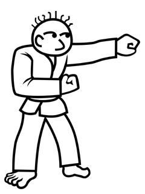

|  |
修行にはげむ孤独な武道家。
リズムを取り入れた独自の拳法をあみだし中らしい。
けっこう感情が顔の表情に出やすい性格なので
武道大会では相手にワザを読まれてしまい結果がでていない。
ときどき師匠のもとへ相談に行くが
「きほんができていない」と一喝されることもあるようだ。 |
とある農家で収穫された野菜たち。
ヒゲの生えた野菜は売値が落ちるため
農家のおじさんは たいへん困った。
しかもこのヒゲ、リズムにノってイイ感じで抜かないと
キレイに抜けないという性質をもっているそうだ。
しかたなく、ノリノリで野菜のヒゲを抜く おじさん。
その姿はとても楽しそうに見えてしまうので
だれも同情せず、おじさんもちょっと疲れ気味…
と思いきや、あらためておじさんをたずねると、
だんだん楽しくなってきて、実はヤミツキなのだそうだ。
なんだ、よかったネ！ |
|
|
彼らはマーチャと呼ばれる特殊部隊に所属している。
隊員たちはまだまだ経験が足りず、隊長におこられてばかり。
とにかくチームワークが大切な職業なので、
行進にも気合が入っちゃうようだ。
ちょっと足並みが乱れるだけで、激怒する隊長。
そんな隊長だが、
なかなかどうしてオチャメなところもあるらしい… |
リズムとバッティングに青春をささげるという彼。
さぞかしストイックであろうと想像していたが、
話をしてみるとたいへんキサクで彼女もいるとのこと。
後方でUFOに乗っているのは、スペースアンパイア。
審判員である。個人プレーしか扱わないので、
ビミョーな判定で周囲に責められることもなく
いつも、のほほんとしている様子。 |
|
|
通称「パチパチ３人衆」の彼ら、
デビューそのものは古く、意外と芸暦は長い。
ちゃんとした芸名が 他にあるのだが
通称とパフォーマンスの内容が結びつきやすいためか
「パチパチ３人衆」として認知されてしまった。
ウワサでは、改名しようかと話し合っているらしい… |
|